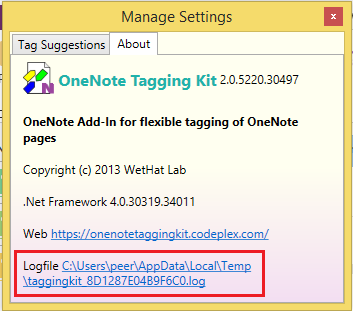

Troubleshooting Tips
If the issue you are having is not already covered below, please also check the Issues page on GitHub. Your issue may already heve been reported or fixed.
Known Issues
- The Tagging Kit command group does not show up in the OneNote ribbon bar
- Searching pages by Tags or Full-Text Queries does not work
- Exception from HRESULT: 0x8004200C
- Exception from HRESULT: 0x80042019
- Exception from HRESULT: 0x80042030

Submitting a Bug or Enhancement Request
You are very much welcome to report issues or submit enhancement requests. Before doing so, please check that nothing appropriate is recorded at Issues
If you are reporting a bug, make sure you always attach the add-in's logfile.
The easiest way to locate the logfile is to open the Settings dialog and
select the About tab.
Alternatively you can open File Explorer, navigate to the
%TEMP% directory and pick up the newest logfile named taggingkit_*.log.
The * stands for a sequence of characters and numbers, e.g.
taggingkit_8DA0C2A5B55670C.log.